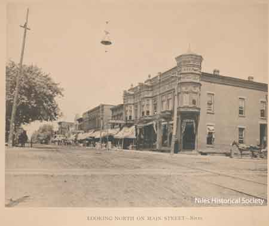
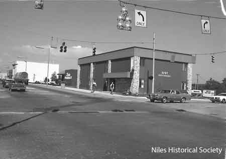
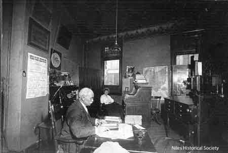
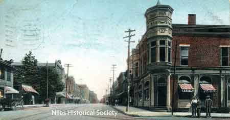
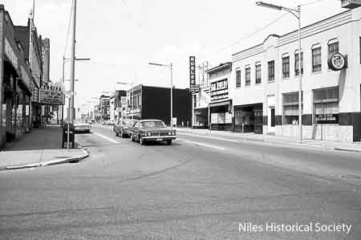
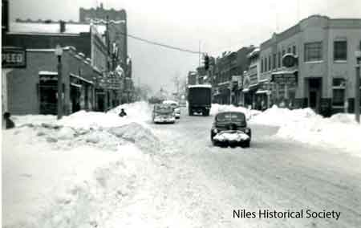
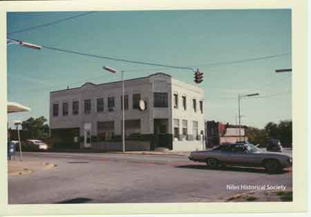
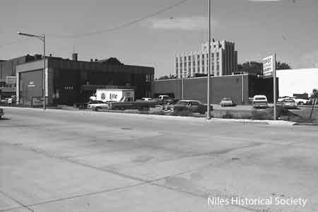

Hartzell Building

View of the Hartzell Building built in 1889 on the northeast corner of the intersection of South Main Street and Mill Street (later East State Street.
{kind=link}

View of the new Spot Restaurant located at the northeast corner of Main and State Streets.
{kind=link}

George Taylor

Inside view of the bank where George and Allie Taylor worked, Home Federal and Savings, 1914.

In 1930, Home Savings & Loan Company was moved to the Hartzell Building, which had been built in 1889, on the corner of South Main and East State Streets.

In 1958 the Savings and Loan Association moved into the new, one story brick building, which presently stands on the southeast corner of North Main and East Church Streets.
{kind=link}

William McKinley's birthplace

Main Street looking north about 1895-1900. The Hartzell Building is on the corner.

Photo taken of The Spot Restaurant located at 13 East Park Avenue (south side) in downtown Niles before the advent of urban renewal.

View of the Hartzell Building at corner of South Main Street and Mill Street (East State Street).

1934 aerial view of Downtown Niles.

Close-up view 1934 aerial view of Downtown Niles, with the Hartzell Building shown in bottom center of image.

Doubet Jewelry

Girl Scout office in Hartzell Building with Star Jewelers and Seiber's Sporting Goods Store.
{kind=link}

Reisman’s Furniture Store

The Hartzell Building after the 1950 Thanksgiving Day snow storm.
{kind=link}

The Hartzell Building after the 1950 Thanksgiving Day snow storm.

The Hartzell Building occupied by the

View of the Hartzell Building and
{kind=link}

Urban renewal has demolished the buildings around the Hartzell Building. 1974.
{kind=link}
